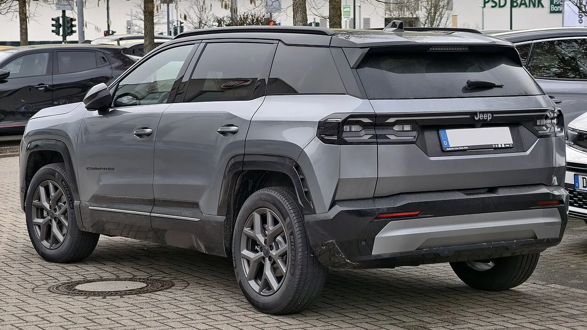

▲ 신형 컴패스는 각진 외관으로 오프로드 이미지를 강조했다 ⓒ M 93 / Wikimedia Commons (CC BY-SA 3.0 DE)
지프라는 배지는 그 자체로 약속입니다.
거친 길을 갈 수 있다는 약속입니다.
그래서 지프의 차는 항상 그 기준으로 평가받습니다. 신형 컴패스 e-하이브리드에 대한 해외 평가도 정확히 그 지점을 짚었습니다.
1. 평가의 요지
카스쿱스의 표현은 직설적입니다. 컴패스의 험악한 외관이 "현금화할 수 없는 수표를 쓴다"는 것입니다.
📍 이 표현이 뜻하는 것
영어 관용구로, 지키지 못할 약속을 한다는 뜻입니다. 각진 차체와 두툼한 휠아치, 세븐 슬롯 그릴이 오프로드 성능을 기대하게 만들지만, 실제 e-하이브리드 사양의 주행 능력은 그 기대에 못 미친다는 지적입니다.
| 요소 | 기대를 만드는 것 | 실제 |
|---|---|---|
| 외관 | 각진 차체 · 두툼한 클래딩 | 정통 오프로더의 인상 |
| 파워트레인 | — | 1.2L e-하이브리드 — 엔트리 사양 |
| 플랫폼 | — | STLA 미디엄 — 모노코크 승용 기반 |
표의 아랫줄이 핵심입니다. STLA 미디엄은 승용차와 크로스오버를 위한 모노코크 플랫폼입니다. 랭글러나 글래디에이터가 쓰는 바디온프레임과는 성격이 다릅니다.
2. 1.2L e-하이브리드라는 선택
엔트리 파워트레인이 1.2리터입니다.
이 배기량 자체가 문제라는 뜻은 아닙니다. 유럽 시장에서 이 정도 배기량의 마일드/e-하이브리드는 표준에 가깝습니다. 세금과 배출가스 규제가 그렇게 만들었습니다.
📍 유럽 규제가 만든 배기량
유럽은 CO₂ 배출량 기준이 엄격하고, 국가별 자동차세도 배기량·배출량에 연동됩니다. 1.2L급 소배기량 터보에 전동화를 얹는 구성이 가장 현실적인 답이 된 배경입니다. 문제는 이 조합이 지프라는 브랜드 이미지와 충돌한다는 데 있습니다.

▲ 신형 컴패스의 후면. 두툼한 범퍼 가니시가 험로 이미지를 강조한다 ⓒ M 93 / Wikimedia Commons (CC BY-SA 3.0 DE)
3. 지프의 오래된 딜레마
이 문제는 컴패스만의 것이 아닙니다.
| 구분 | 모델 | 구조 |
|---|---|---|
| 정통 오프로더 | 랭글러 · 글래디에이터 | 바디온프레임 |
| 도심형 | 컴패스 · 레니게이드 등 | 모노코크 |
브랜드 전체가 오프로드 이미지로 팔리는데, 판매량은 도심형에서 나옵니다. 그래서 도심형 모델에도 오프로더의 외형을 입힙니다.
이 전략이 판매에는 도움이 되지만, 평가에서는 감점 요인이 됩니다. 기대치를 스스로 높여놓았기 때문입니다.

▲ 랭글러는 바디온프레임 구조의 정통 오프로더다. 컴패스와는 태생이 다르다 ⓒ Wikimedia Commons
4. 다만 공정하게 볼 부분
반대편의 이야기도 짚어야 합니다.
✅ 컴패스가 실제로 겨냥하는 것
· 구매자 대부분은 험로에 가지 않습니다 — 도심 주행이 실제 사용 환경입니다
· STLA 미디엄은 최신 플랫폼입니다 — 실내 공간과 전동화 대응에서 유리합니다
· 순수전기 사양이 함께 있습니다 — 선택지의 폭은 넓어졌습니다
· 경쟁 상대는 랭글러가 아닙니다 — 같은 급의 유럽·일본 크로스오버입니다
네 번째 항목이 평가의 기준점입니다. 컴패스를 랭글러의 기준으로 재면 당연히 부족합니다. 같은 급의 도심형 SUV와 비교했을 때의 상품성은 별도로 따져봐야 합니다.

▲ 지프는 라인업 전반에 전동화를 넓히고 있다 ⓒ Wikimedia Commons
5. 국내에는 언제 오나
📍 국내 출시 일정은 미확정입니다
이번 평가는 유럽 사양 기준입니다. 1.2L e-하이브리드는 유럽 규제 환경에 맞춘 구성이라, 국내 도입 시 파워트레인 구성이 달라질 수 있습니다. 현재 국내 출시 일정은 발표되지 않았습니다.
국내 라인업과 사양은 지프 코리아에서 확인할 수 있습니다. 지프 코리아 바로가기
6. 정리
카스쿱스는 신형 지프 컴패스 e-하이브리드에 대해 "험한 외관이 지키지 못할 약속을 한다"고 평가했습니다. 각진 차체가 오프로드 성능을 기대하게 만들지만 실제 주행이 따라오지 못한다는 것입니다.
신형 컴패스(J4U)는 STLA 미디엄 플랫폼 기반의 모노코크 SUV입니다. 엔트리 파워트레인은 1.2L e-하이브리드이며 순수전기 사양도 함께 운영됩니다.
다만 비교 기준을 어디에 두느냐가 중요합니다. 랭글러가 아니라 같은 급 도심형 SUV와 놓고 보면 다른 결론이 나올 수 있습니다. 국내 출시 일정은 아직 발표되지 않았습니다.